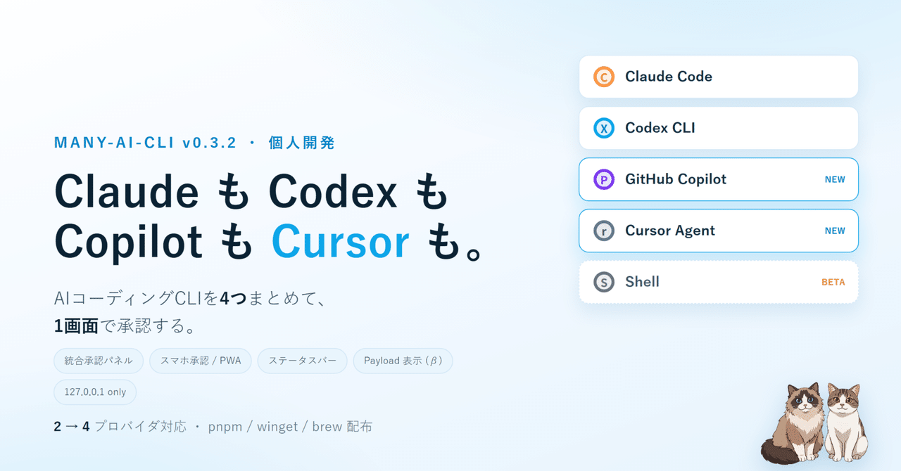

AI コーディング CLI を 1 つだけ使っているうちはターミナル 1 枚で済むのに、Claude Code・Codex・GitHub Copilot CLI・Cursor Agent CLI と並列で動かし始めた途端、ターミナルが 4 枚開き、どこかで承認待ちが 10 分止まっていることに気づけなくなる。その「気づけない」を 1 画面に集約するために作っているのが個人開発の many-ai-cli です。v0.3.2 で形になった主役と周辺装備を、house style の構造化資料としてまとめ直しました。
複数の AI コーディング CLI を並列で動かすと、誰がいつ承認待ちで止まっているかを人間が見張る時間がどんどん増えます。具体的にはこういう症状が出ます。
要するに、AI に任せたはずの作業を、人間が「承認の見張り番」として常駐することでカバーしている状態でした。many-ai-cli はこの見張り番をブラウザ 1 画面に集約する薄いラッパーです。各 AI CLI を PTY で包み、出力をローカル Hub に集めて、承認待ちを検出したら 1 枚のパネルに並べる。CLI そのものの挙動には触りません。
127.0.0.1 固定で、外部公開ポートは開けません。AI にコマンドを打たせる入口を、うっかり外から触れる場所には置きたくないからです。
v0.3.2 でいちばん伝えたい変化はここです。これまで対応していた Claude Code / Codex CLI の 2 つに加えて、v0.3.x で GitHub Copilot CLI と Cursor Agent CLI が加わり、対応プロバイダが 4 つになりました。たとえばこんな同時運用が、ひとつの画面の中で完結します。
これらを同時に走らせて、4 つの承認待ちを 1 枚のパネルで受けられます。どれが返事待ちなのかはプロバイダごとの色チップで一目で分かり、承認バーには Claude:2 / Codex:1 / Copilot:1 / Cursor:1 のように、いま何が何個つながっているかも出ます。起動は many-ai-cli copilot や many-ai-cli cursor-agent で透過的に Hub 経由になります。
対応 CLI を増やすときに、いちばん気をつけたのがここです。many-ai-cli がやっているのは、公式の copilot / cursor-agent CLI を そのまま PTY で包むことだけ。GitHub の OAuth トークンも、PAT も、Cursor のセッショントークンも、読まないし、保存しないし、中継もしません。ラップされた CLI はこれまでどおり各社の API と直接通信し、many-ai-cli はローカルの WebSocket 越しに画面の入出力を運ぶだけです。サインインは各 CLI に任せて、Hub は「画面を集める係」に徹する。この境界は最初から崩していません。
画面の一番下に細い帯を置いて、いま動いているセッションの トークン量・概算コスト・コンテキスト残量・燃費（バーンレート） を常時表示するようにしました。きっかけは、コンテキストが知らないうちに溢れていて AI の調子が悪くなる事故です。残量ゲージが 90% を超えたら赤くして、視界の端で「そろそろ危ない」と気づけるようにしてあります。色味は業務時間中ずっと視界に置ける、しつこくない強さに寄せました。
外出時に承認だけ返したいケースは意外と多く、ここも整えました。Hub は外に出さない方針なので、スマホ側の 127.0.0.1 に SSH トンネルで Hub を引き込む形にしています。公開ポートは一切開けません。画面はホーム画面に追加できる PWA にして、承認が来たら通知が飛ぶようにしました。
スマホ向け UI は v0.3.x ではまだベータ扱いで、レイアウトや通知挙動は今後も触っていきます。
モニタが 2 枚あると、片方でグリッド表示にして全セッションをぼんやり眺め、もう片方で操作したくなります。セッションを別ブラウザ窓に「グリッドビュー」として切り出して 2×2 や 3×3 に並べられるようにしました。ついでに、ただのシェル（PowerShell や bash）も普通のセッションとして開けるようにしてあり、新しいセッションを作るとき Claude / Codex / Copilot / Cursor に並んで「Shell」が選べます（こちらもベータ）。
リモートや別環境の Hub に接続するための統合ランチャーを前から持っていましたが、長く Windows 専用でした。今回やっと Linux と macOS でも動く ようになりました。プロファイルを 1 つ書いておけば、WSL の中で Hub を起動したり、SSH でリモートの Hub につないだりがボタン 1 つです（WSL だけは Windows 専用、SSH 接続は全 OS）。
両手がふさがっているときの入力手段として、音声入力をブラウザ認識とローカル Whisper の両方に対応させました。選び方は用途で割り切れます。
Gboard 等のサードパーティ IME を使う手もある。Hub の音声機能を経由しない選択肢おもしろがって作ったのが、iPhone の Safari で喋って手元 PC の Whisper に投げて結果を返すリレー。マイクと推論の場所を分けただけですが、意外と実用になりました。無音や雑音で勝手に変なテキストが出る問題は道半ばです。
借りたリモートサーバーで Hub を常駐させる運用のために、サーバー側の初期設定を 手元の AI エージェントに丸ごと貼り付ければ SSH 越しに設定してくれる手順書 を用意しました。エージェントは各ステップで「ちゃんとローカル限定で待ち受けているか」のような確認を満たしながら進み、最後に手元の接続プロファイルまで作ります。お試し向けの単一サーバー版と、常駐向けの Docker 版の 2 種類です。
セッション履歴をローカルの SQLite に残し、後から横断検索・要約閲覧・書き出しができる「Workbench」タブを足しました。ついでに Hub の中からファイルツリーを見たり、Git のログや差分を眺めたり、作業ツリーをまとめてコミットしたり（プッシュはしません）もできます。
Hub の中に小さな HTTP プロキシを内蔵しました。ラップしている CLI の ANTHROPIC_BASE_URL / OPENAI_BASE_URL を起動時に黙ってこのローカルプロキシに向けます。すると次の URL へのリクエストとレスポンスがすべて Hub の中を一度通過します。
https://api.anthropic.com/v1/messageshttps://api.openai.com/v1/chat/completionshttps://api.openai.com/v1/responsesTLS の中間者攻撃は一切しません（独自 CA を端末に配ったりもしません）。やっているのは CLI が向く URL を 1 段ずらすだけです。捕捉した payload は、チャットペインの上のトグル 「Payload 表示 (β)」 を ON にすると構造化されたターン一覧で見られ、各ターン右上の「Raw」ボタンで生 JSON が開きます。AI に何を投げて何が返ってきたのか、これまでターミナルの行ぶれだけで見ていた部分が JSON の塊で全部見える。
Authorization ヘッダーはプロキシ内で剥がしてから内部に渡しているので、API キーや OAuth トークンが Hub のメモリに残ることはありません。
入れ方も変えました。pnpm add -g many-ai-cli で入るようにして、winget・Homebrew・deb / rpm からも入れられます。Windows ではブラウザで直接落とした exe は警告に引っかかりやすいので、パッケージマネージャ経由にしておくと「ブラウザで exe を拾う」導線そのものを避けられます。コード署名の代わりにはなりませんが、導入体験はかなり楽になります。
ついでに、新しいセッションを作るときにモデルを選べるようにし、Ollama 経由のモデルにも振り分けられるようにしました。シェルの環境変数をいじらなくていいよう、Hub がセッションごとに注入します。最後に名前も any-ai-cli から many-ai-cli に変えました。npm に出すとき既存パッケージと名前が近すぎて弾かれたためですが、4 つの CLI を並べる用途には many のほうが合っている気もします。
Hub は 127.0.0.1 固定で、外には出しません。many-ai-cli 自身はテレメトリも送りません。ただ、正直に書いておくと外部通信が「ゼロ」ではありません。
隠さないでおきたいので、README にも同じ温度感で書いています。
並べてみると本当に多くて、自分でも「よくこんなに足したな」と思います。でも今回の主役ははっきりしていて、見張れる CLI が Claude / Codex / Copilot / Cursor の 4 つになったことです。残りはすべて、その 4 つを「見張らなくて済む」ようにするための周辺装備でした。ステータスバーも、スマホ承認も、別窓グリッドも、Workbench も、Payload 表示も。
完成という感じはまだしません。音声の誤認識も承認の取りこぼしも残っているし、これでいいのかは正直よく分かっていません。それでも、任せたものを任せたままにできる時間 は確実に増えています。並列で AI CLI を使っていて承認の見張りに疲れているなら、たぶん刺さると思います。